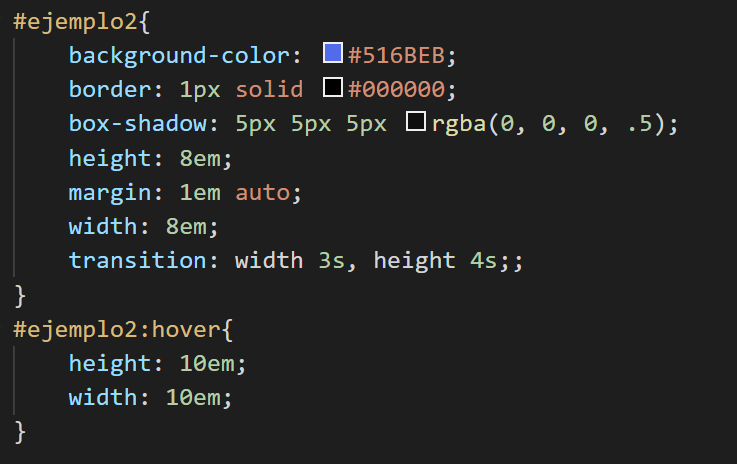

Expansiones
Las transiciones de expansión nos permiten aplicar un cambio de tamaño gradual en del documento HTML. El cambio de tamaño se producirá en el eje X, en el eje Y, o en ambos a la vez.
Para entenderlo mejor sitúa el ratón en el recuadro que tenemos debajo y observa cómo cambia su tamaño.
En el ejemplo se puede observar como la figura se expande en ambas coordenadas a tráves de nuestro archivo CSS #selector:hover.
